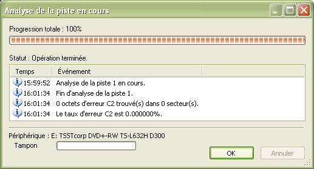

- L'outil Gérer les pistes affiche les informations de la table d'allocation (TOC) du disque inséré dans le lecteur/graveur. Il offre également la possibilité de vérifier et sauver les pistes sélectionnées. Pour ouvrir le gestionnaire de pistes, utilisez le menu :
- Actions
 Gérer les pistes...
Gérer les pistes...
Sélectionnez les piste désirées en cliquant dessus avec la souris en maintenant la touche MAJ ou CTRL appuyé. Vous pouvez également utiliser les flèches du clavier et la touche MAJ pour sélectionner les pistes dans la liste.
- Lorsque vous sauvgardez une piste sur votre disque dur, vous aurez à sélectionner un dossier de sauvegarde. Les pistes seront alors automatiquement sauvées et nommées suivant leur numéro et type (Track 1.wav, Track 2.iso). Pour sauver les pistes sélectionnées sur votre disque dur, cliquez sur le bouton Enregistrer les pistes sélectionnées sur le disque dur :

- Pour rechercher des erreurs sur les pistes sélectionnées, utilisez le bouton Rechercher des erreurs sur les pistes sélectionnées :

Ci-dessous le résultat après la vérification d'une piste de données :.

Vous pouvez également effacer les pistes sélectionnées si votre disque est réinscriptible ne cliquant sur le bouton Effacer les pistes sélectionnées du disque :